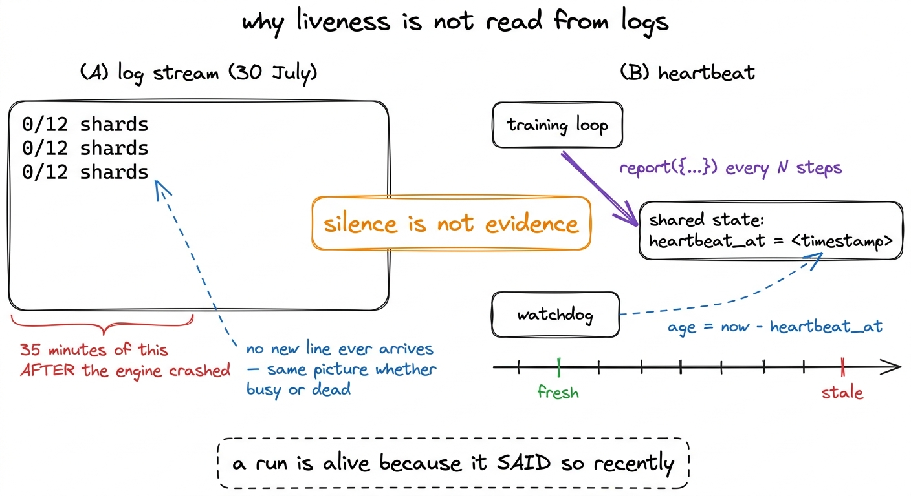
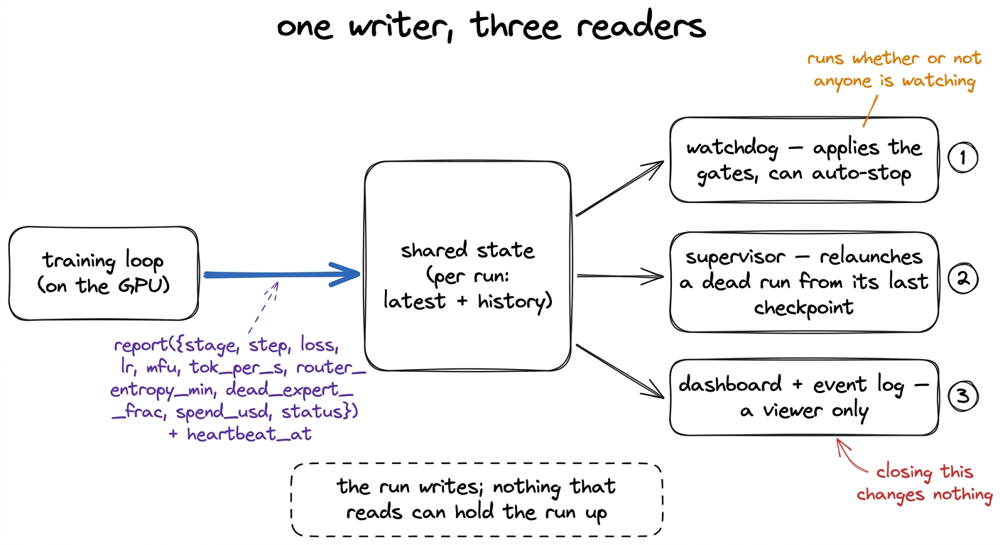
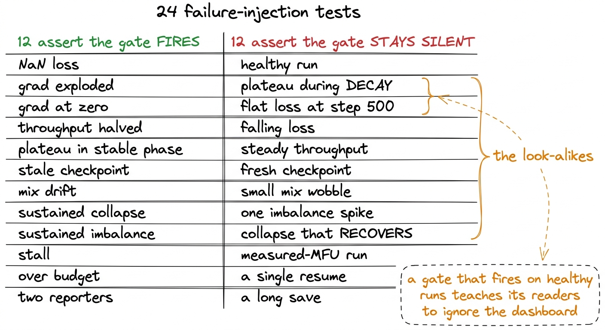
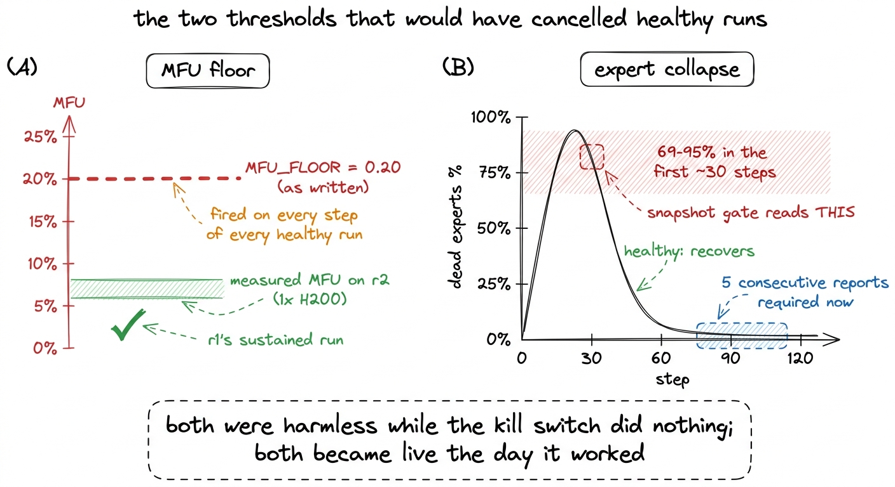
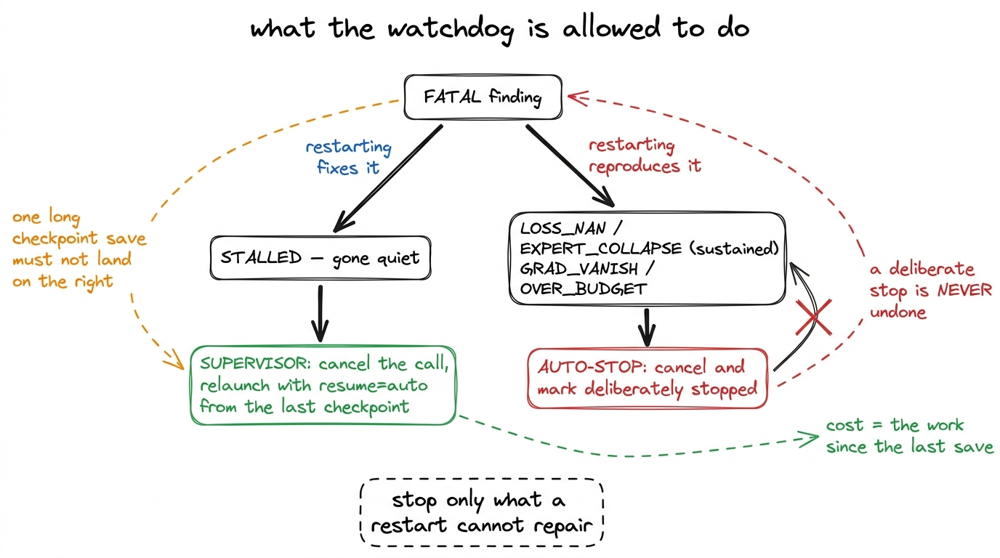
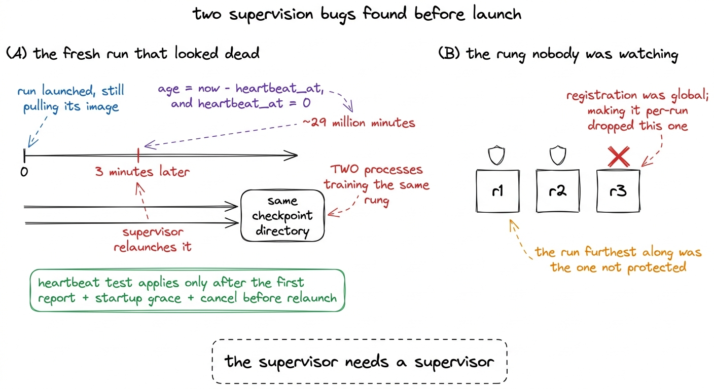

Watching a run you cannot see
Liveness from heartbeat timestamps rather than log streams, twenty-four failure-injection tests, and two alert thresholds that would have killed healthy runs the moment the kill switch started working.
A training run on rented hardware is invisible by default. The GPU is in someone else's data centre, the process is inside a container we have no shell on, and the only thing coming back is a log stream. That arrangement works until it does not, and on 30 July it did not: a log reader on this project displayed 0/12 shards for thirty-five minutes while the engine it was reading had already crashed.
Nothing about that reader was broken. The stream had stopped, and a stream that has stopped is indistinguishable from a stream whose producer has nothing new to say. Absence of output is not evidence of anything.
The rule that came out of that incident is the design decision everything else in the monitoring system is built on. Liveness is never inferred from a log stream. The training loop writes an explicit heartbeat timestamp into shared state, and the watchdog compares that timestamp to the wall clock. A run is alive because it said so recently, not because it has not yet said otherwise.

figure rendering · The 30 July incident and the rule it produced. The heartbeat is a posiWhat the loop reports, and who reads it
The training loop calls a report function every N steps with a fixed set of fields: stage, step, tokens seen, target tokens, loss, learning rate, MFU, tokens per second, minimum router entropy, dead-expert fraction, spend so far, status and ETA. The call is cheap and fire-and-forget. It stamps the current time onto the payload as heartbeat_at, appends a trimmed copy to that run's history, and returns.
Everything downstream reads from that state rather than from the run. The watchdog wakes on its own schedule whether or not a human is watching, evaluates every registered run against its own history, writes its findings back, and can stop a run outright. The dashboard is only a viewer. The supervisor, described in the chapter on checkpointing, is a separate schedule that relaunches runs that have died.

figure rendering · The shape of the system. Telemetry is written once and read by three iKeeping the state per run rather than global matters more than it looks. An earlier version wrote every run into a single latest and a single history, which was correct while exactly one model trained at a time and destructive the moment two did. Three rungs trained concurrently, so buckets are keyed by run identifier and every trend gate is computed over one model's own points.1 The history buffer keeps the earliest points as well as the most recent, rather than a plain tail. A run logging every ten steps produces thousands of points, and discarding the oldest would throw away the window in which expert collapse happens and recovers, which is the only evidence the balancer ever worked.
The gates
A gate is a pure function of the latest telemetry snapshot and a window of history. Purity is what makes the next section possible: every gate can be driven with synthetic telemetry on a laptop, without Modal and without a GPU.2 The window matters as well as the snapshot. The watchdog wakes on a fixed schedule, and a NaN loss or a spike is transient — it can appear and be overwritten between two polls. The first version of this checked only the current snapshot and passed a NaN straight through.
| gate | level | what it catches |
|---|---|---|
LOSS_NAN | FATAL | loss went NaN or Inf anywhere in the window |
LOSS_SPIKE | WARN | loss jumped against its own trailing median |
EXPERT_COLLAPSE | FATAL | dead-expert fraction high across consecutive reports |
DEAD_EXPERTS | WARN | dead-expert fraction high once |
NO_ROUTER_TELEMETRY | WARN | the dead-expert metric stopped being reported |
LOAD_IMBALANCE | WARN | median expert-load imbalance elevated, not just spiking |
STALLED | FATAL | heartbeat older than the threshold |
GRAD_EXPLODE / GRAD_VANISH | WARN / FATAL | pre-clip gradient norm too large, or at zero |
THROUGHPUT_DROP | WARN | recent throughput below this run's own established median |
LOSS_PLATEAU | WARN | loss stopped improving during the stable phase |
CHECKPOINT_STALE | WARN | saves have quietly stopped |
MIX_DRIFT | WARN | realised data mix diverged from the manifest target |
DUPLICATE_REPORTERS | WARN | step numbers going backwards repeatedly |
OVER_BUDGET | FATAL | spend past the cap |
SUPERVISOR_STALE | WARN | the supervision system itself stopped running |
The second half of that list was added for the multi-day runs, and every entry in it describes the same class of failure: a way for a run to waste days while looking healthy. A crash announces itself. A run whose throughput silently halved keeps producing a falling loss curve and quietly doubles its own cost.
Half the tests assert silence
There are twenty-four failure-injection tests for these gates. Twelve of them inject a failure and assert the matching gate fires. The other twelve inject something healthy and assert that nothing fires at all.
The second set took the work, because the interesting cases are the look-alikes. Loss going flat is a plateau during the stable phase and the expected shape during decay, so the plateau gate is scoped to the stable phase and asserted silent during decay. Loss also moves erratically in the first few hundred steps, so the gate has a minimum step and is asserted silent at step 500 on a deliberately flat trace. A dead-expert fraction of 90% is a collapse if it persists and ordinary early training if it recovers, so both traces are in the suite and only one may fire.
("plateau NOT flagged during decay",
lambda: "LOSS_PLATEAU" not in codes(base(phase="decay"), hist(loss=FLAT))),
("collapse-then-recover is NOT auto-stopped",
lambda: "EXPERT_COLLAPSE" not in codes(
base(dead_expert_frac=0.9),
hist(dead=lambda i: 0.9 if i < 70 else 0.01))),
("a previous run's history does not trigger gates",
lambda: "THROUGHPUT_DROP" not in codes(
base(tok_per_s=6000),
hist(tps=lambda i: 28936.0, run_id=PREV) + hist(n=4, tps=lambda i: 6000.0))),The third of those was written after the gate fired for real. A rung was restarted, its first steps were compared against the previous run's established throughput median, and the watchdog reported a large regression on a run that was behaving normally. History is now filtered to the current run before any trend is computed.
The reason to spend half a test suite on silence is not tidiness. A gate that fires during normal operation teaches whoever reads the dashboard to scroll past it, and a dashboard that is scrolled past carries the impression of supervision without the substance. The load-imbalance gate is a small example: the snapshot version warned repeatedly through one night on runs whose dead-expert fraction never left the healthy range, so it now compares the median of a recent window. A balancer correcting a spike is what a working balancer looks like; only the median moves when the balancer is losing.

figure rendering · The test suite. Detection is the easy half.Two thresholds that became dangerous the day the kill switch worked
For a period, the auto-stop path did not stop anything. It set a flag, pushed an event and returned, and the flag was read by nothing, so a fatal condition at three in the morning produced a red dashboard and a GPU that kept billing. Fixing that is a few lines. What the fix changed is the cost of a false positive: every threshold that had been producing a harmless red box was now attached to a working cancel. Two of them were dangerous on the day that happened.
MFU_FLOOR = 0.20. The constant was written from what well-tuned dense training reaches, which is 40 to 55%, and 20% looked like a generous floor. Measured MFU on r2, the rung above ours and the model most of the MFU work was done on, is 5 to 8%, so the gate fired on every step of every healthy run. It had been ignored for exactly that reason, which is how it survived long enough to become armed. The floor was reset to 3%, and r1's own sustained 2.4 to 2.5% later showed that even 3% sits above the least efficient healthy run on the ladder, so it had to move again. A floor must be placed under the smallest healthy model, not the largest, because smaller models carry proportionally more overhead per FLOP.
EXPERT_COLLAPSE, evaluated on a single snapshot. As we saw when the router collapsed, the dead-expert fraction of a healthy run passes through 69 to 95% in its first thirty steps or so at every balancer strength we measured, and then recovers. A snapshot gate reads the peak of that trajectory as a fatal collapse, so with a working cancel behind it the pair cancels healthy runs during their first minute, repeatedly, and the supervisor is correctly forbidden from undoing a deliberate stop. The gate now requires five consecutive reports above the threshold before it is fatal; a single high reading is a warning that the balancer may still recover.

figure rendering · The two calibrations. A threshold nobody acts on is a comment; a thresStopping and restarting are not the same verdict
STALLED is still detected and still labelled fatal. It no longer triggers auto-stop.
The reasoning is about what each response means afterwards. STALLED says the run has gone quiet, which is a liveness problem the supervisor already handles correctly: it cancels the call and relaunches from the last checkpoint, losing at most the work since the last save. Auto-stopping instead marks the run deliberately stopped, and a deliberate stop is never undone, because undoing one would resurrect a collapsing run in a loop forever. So a transient hang, or a single checkpoint save that ran long, would have taken a healthy run off its GPU and left it there until a human noticed.3 The flagship writes roughly 213 GB per checkpoint and the save blocks the loop, so its heartbeat legitimately goes quiet for a long time. A run whose last reported status was checkpointing gets a much longer grace period than one that simply went silent; killing it mid-write would destroy a healthy run and leave a torn checkpoint behind.
Auto-stop is now reserved for pathologies a restart cannot fix: NaN loss, a sustained router collapse, gradients that have vanished, and a breached budget. Restarting any of those reproduces them.

figure rendering · The split between the two responses. The asymmetry is that a restart iAlerts nobody could read
Every finding the watchdog raised was pushed onto a queue that nothing drained. Alerts had accumulated there since the system was first deployed, in a place no human and no page ever looked, and the mechanism worked correctly the entire time.
Findings now also go to a bounded event log that both the dashboard and the terminal status view display, so a finding raised at three in the morning is visible at nine. Two smaller problems were found alongside it. The dashboard had been showing nothing at all for a period, because a duplicated declaration in its inline script is a syntax error, and a script that fails to parse produces no charts and no cards, leaving a page stuck on "loading".4 The page now installs a top-level error handler that replaces the content with the words "DASHBOARD BROKEN", and its script is syntax-checked before deploy. A blank page and a healthy page look similar enough at a glance; a page that says it is broken does not. And it had been replaying the watchdog's stored verdicts rather than evaluating current telemetry, so it could show a fatal condition from a previous run for as long as the stale verdict lived.
Supervising the supervision
A pre-flight check before the ladder launched turned up two problems in the system that was supposed to be protecting it.
The first: heartbeat_at is zero for a run that has not reported yet. The supervisor computed heartbeat age as now - heartbeat_at, which for a fresh run is about 29 million minutes, so every newly launched run looked as though it had been silent since 1970. r2 was relaunched three minutes after it was launched, while it was still pulling its container image, and the supervisor of that period did not cancel the original before spawning the replacement. Two processes were then training the same rung into the same checkpoint directory, caught before either reached step 100 and wrote one. The fix has three parts: the heartbeat test applies only once a run has ever reported, a startup grace period covers image pull and model build, and the supervisor cancels before it relaunches.
The second: r3 was not supervised at all. Registration for crash recovery had been global, and making it per-run silently dropped it. The run furthest along was the one with no protection, which is the shape these bugs tend to have: the longest-running thing is the one most likely to have been registered under the older convention, and the most expensive one to lose.

figure rendering · The two failures the pre-flight check found. Both are in the recoveryBoth fixes are specific. What was added because of them is general: the watchdog now checks a short list of invariants about the supervision system itself on every pass. Every reporting run must be registered for crash recovery, or nothing will bring it back when it dies. The newest checkpoint each live run would resume from must belong to that run, or a restart loads the wrong model. And the supervisor must have run recently, which the watchdog can see and the supervisor cannot. The two schedules check each other; if both stop, only a person notices, which is the residual risk we accepted.5 The auto-stop path has its own end-to-end test: it spawns a stand-in function, injects a fatal telemetry snapshot, runs the real watchdog, and asserts the call is actually dead afterwards. That test immediately caught a bug in the fix itself: the cancel was being issued with an argument this client does not accept, so it had been failing silently. A kill switch that has never been fired against a real process is a kill switch of unknown state.
What it looked like on the run that finished
r1 trained for 38,147 steps with all of this armed, and no gate raised a fatal finding. At the last full report the telemetry read loss 2.623, learning rate 6.07e-5, throughput 28,936 tok/s, MFU 2.5%, dead experts 0.0%, load imbalance 4.0, minimum router entropy 0.973, gradient norm 0.299, and spend $252.35. Zero loss spikes were skipped across the run.
That is a quiet record, and the quietness is the result. The value of this system on r1 was not that it caught something; it is that when the dashboard was green, green meant something, because the gates had been tested against the healthy shapes as well as the broken ones. Three things here transfer to any long run on hardware we do not own.
Liveness needs a positive statement with a timestamp. Anything else, whether a log line, an open connection or a process that has not exited, measures a proxy that correlates with the thing until the moment you need it not to. This is the same error as reading router entropy to detect expert collapse, in different clothing.
A threshold that nobody acts on is a comment. Both dangerous constants had been visibly wrong for a while, and both were tolerated because their only consequence was a red box. The day the cancel started working they became decisions, and a threshold that becomes a decision should be re-derived from measurement rather than inherited.
Test the recovery system as a system. The gates were well covered before any of the supervision bugs appeared, and none of those bugs were in a gate. They were in registration, in an arithmetic edge case at time zero, and in a cancel call that had never been fired at a real process.